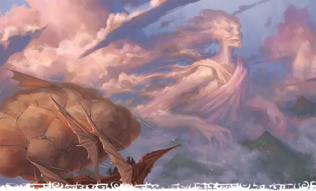

Отпрыск Мемнора
Scion of Memnor
Громадный Великан (Титан), обычно хаотично-нейтральный

Класс Доспеха 20 (природный доспех)
Хиты 656 (32к20 + 320)
Скорость 60 футов, летая 80 футов (парит)
| мод | спас | ||
|---|---|---|---|
| СИЛ | 30 | +10 | +10 |
| ЛОВ | 18 | +4 | +12 |
| ТЕЛ | 30 | +10 | +10 |
| мод | спас | ||
|---|---|---|---|
| ИНТ | 24 | +7 | +7 |
| МДР | 22 | +6 | +6 |
| ХАР | 26 | +8 | +16 |
Навыки Восприятие +14, Магия +15
Сопротивление урону огонь, холод, электричество; дробящий, колющий, рубящий от немагических атак
Иммунитет к урону звук
Иммунитет к состояниям испуг, окаменение, очарование, паралич
Чувства истинное зрение 120 футов, пассивное Восприятие 24
Языки Великаний, Первичный
Опасность 26 (90000 опыта)
Бонус мастерства +8
Особенности
Пролёт. Отпрыск не провоцирует атаку, когда она вылетает за пределы досягаемости врага.
Легендарное сопротивление (6/день). Если отпрыск проваливает спасбросок, он может вместо этого сделать спасбросок успешным.
Сопротивление магии. Отпрыск совершает с преимуществом спасброски от заклинаний и прочих магических эффектов.
Осадный монстр. Отпрыск наносит двойной урон объектам и сооружениям.
Действия
Мультиатака. Отпрыск совершает одну атаку Облачным моргенштерном или Копьём ветра, а так же две атаки Размашистым ударом.
Облачный моргенштерн. . Рукопашная атака оружием: + 18 к попаданию, досягаемость 30 футов, одна цель. Попадание: 32 (4к10 + 10) урона силовым полем плюс 22 (4к10) урона звуком.
Копьё ветра. . Дальнобойная атака оружием: +18 к попаданию, дистанция 120/480 футов, одна цель. Попадание: 42 (5к12 + 10) урона звуком и цель должна преуспеть в спасброске Силы Сл 26, иначе упадёт ничком.
Размашистый удар. . Рукопашная атака оружием: + 18 к попаданию, досягаемость 20 футов, одна цель. Попадание: 28 (4к8 + 10) урона силовым полем.
Грозовой вихрь (перезарядка 5-6). Отпрыск волшебным образом создает вихрь ветра сферой радиусом 60 футов с центром в точке, которую он может видеть в пределах 120 футов от себя. Каждое существо в этой области должно преуспеть в спасброске Силы Сл 24, иначе будет притянуто к центру сферы, оказываясь в незанятом пространстве как можно ближе к центру. После чего в сфере радиусом 30 футов с центром в той же точке раздается раскат грома. Каждое существо в этой области получает 52 (8к12) урона звуком и должно преуспеть в спасброске Телосложения Сл 24, иначе станет ошеломлённым до конца своего следующего хода.
Бонусные действия
Облако обмана. Отпрыск вызывает волшебное облако, которое заполняет сферу радиусом 30 футов с центром в точке, которую он может видеть в пределах 90 футов от себя. Каждое существо в этой области должно совершить спасбросок Мудрости Сл 24. В случае провала существо становится очарованным до конца своего следующего хода. Пока существо очарованно, оно должно использовать свое действие для совершения рукопашной атаки по существу, отличному от него самого, по выбору отпрыска. Если ни одно существо не находится в пределах его досягаемости, очарованное существо совершает дальнобойную атаку по существу, по выбору отпрыска, при необходимости метая своё оружие. В случае успеха существо становится невосприимчивым к Облаку обмана отпрыска в течение следующих 24 часов.
Местные эффекты
Область, окружающая отпрыска Мемнора, изменяется под действием магии великана, создавая один или несколько из следующих эффектов:
• Обязательное подношение. В первый раз, когда разумное существо приблизится к отпрыску на расстояние 6 миль, оно должно совершить спасбросок Мудрости Сл 15, иначе почувствует непреодолимое желание оставить подношение стоимостью не менее 5 зм, спрятанное в укромном месте. Облачные великаны в пределах 6 миль от колыбели или отпрыска сразу же чувствуют местонахождение этого дара. Это принуждение может воздействовать на существо только единожды.
• Наделенные силой облачные гиганты. Облачные великаны находящиеся в пределах 1000 футов от отпрыска получают бонус +8 к броскам атаки и урона.
• Озорной шепот. Шепот ветра можно услышать в пределах 1 мили от отпрыска. Слова неразборчивы, но существо с показателем Интеллекта 5 или выше интерпретирует их как инструкции для розыгрыша, с помощью которого они могут разыграть кого-то.
Если отпрыск погибает, эти эффекты мгновенно прекращаются.
Описание
Великаны происходят от Всеотца Аннама и его детей. Но отпрыски богов великанов могут похвастаться большими претензиями: они внуки Аннама и занимают привилегированное место среди великанов. В некоторых мирах эти отпрыски правили первыми империями великанов, пока Аннам не удалился в уединение. В других мирах отпрыски охраняют места своего рождения (которые богаты магией стихий) или удерживают субстанцию мира вместе.
Отпрыски богов великанов - невероятно могущественные существа, которые наполняют окружающий мир первобытной магией. Во многих мирах они дремлют и стали частью ландшафта. В этом случае каждый отпрыск заключен в стазис внутри могущественного элементаля, называемого колыбелью. Колыбель защищает спящего отпрыска и следует его подсознательным желаниям, в том числе отгоняя незваных гостей. Но если колыбель погибает, отпрыск внутри полностью пробуждается.
Облачный ОТПРЫСК
Дремлющий отпрыск Мемнора предстает в виде плотной, медленно дрейфующей башни из облаков, которая никогда не рассеивается. Часто это облако задерживается над удалённой долиной, создавая постоянно затянутое тучами небо. Разумные существа, живущие под этим облаком, часто проявляют суеверное и лицемерное поведение, почти бессознательно оставляя подарки “духам дождя” и при этом озорно подшучивая друг над другом.
При пробуждении, колыбель облачного отпрыска проявляется как титанический элементаль воздуха, созданный из свирепых ветров и клочьев облаков. Он повелевает воздухом и громом, сбрасывая врагов с небес.
Если колыбель разрушена, отпрыск Мемнора появляется из рассеивающегося облака, часто смеясь, как будто только что услышал отличную шутку. Невероятно высокий и долговязый, отпрыск возвышается на 75 футов и владеет моргенштерном, магически сотканным из плотных облаков. Он склонен рассматривать других существ скорее как игрушки, чем как серьезную угрозу, и использует свою магию иллюзии, чтобы заставить существ сражаться друг с другом. Если ему угрожает серьезная опасность, он использует гром и ветер, чтобы уничтожить своих врагов.